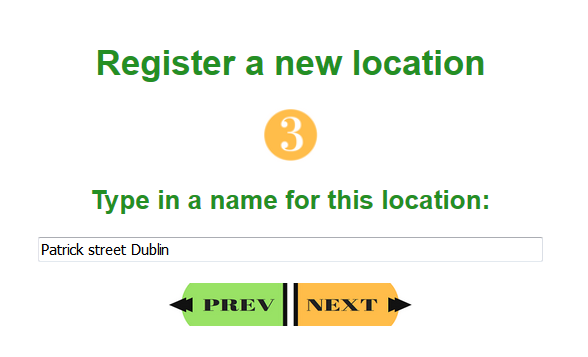
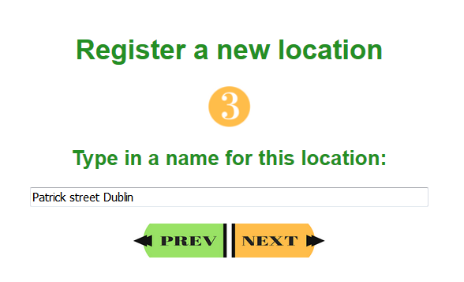

Register personnalised locations
In order to have more accurate result and have something easier than city names I wanted users to be ale to save personnalised locations. I used 2 Google Maps's API for that:
Maps Embed API
This API is usefull to include maps into the website, I used it to help users to find their location.
https://developers.google.com/maps/documentation/embed/?hl=enGeocoding API
Cette API return GPS data from an adress using a HTTP request. The result is return in XML, then the PHP code register it in the data base with an SQL query.
https://developers.google.com/maps/documentation/geocoding/?hl=enThese are screenshot of this interface:

 
